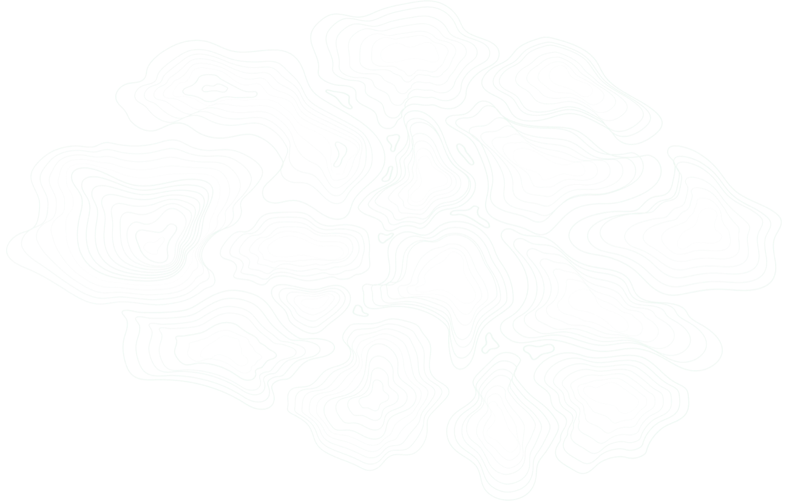
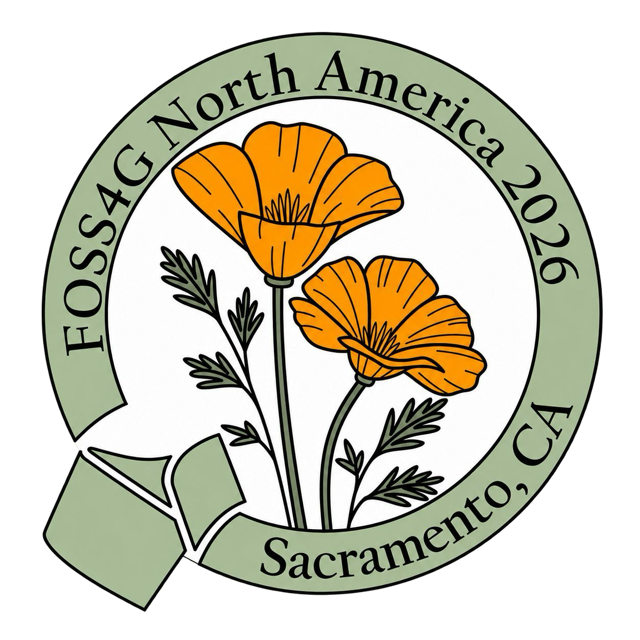
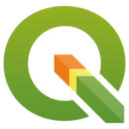
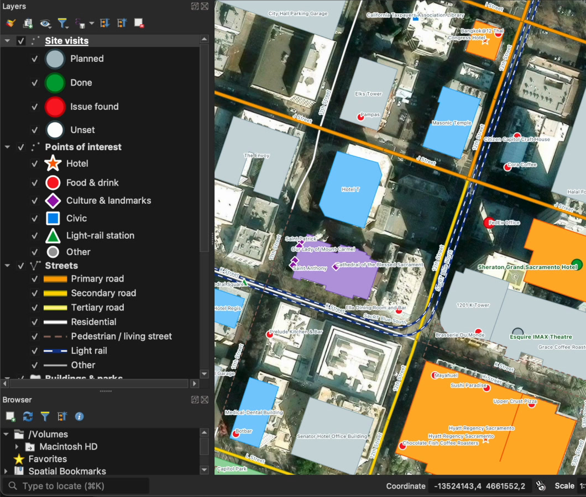
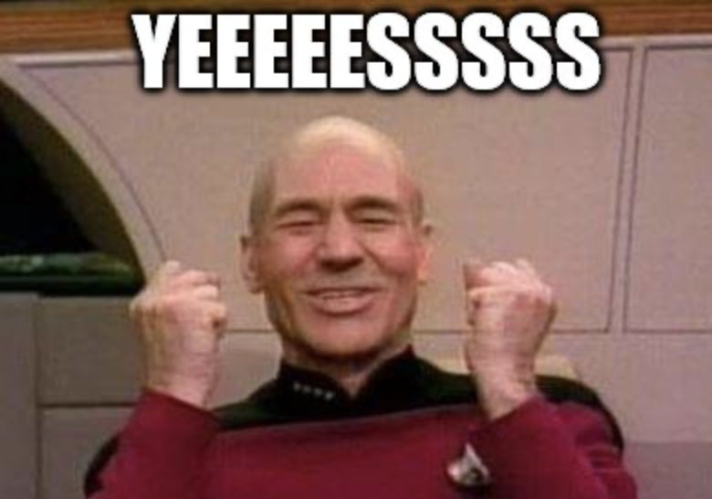
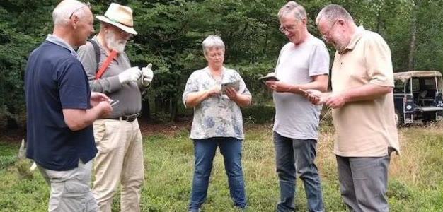
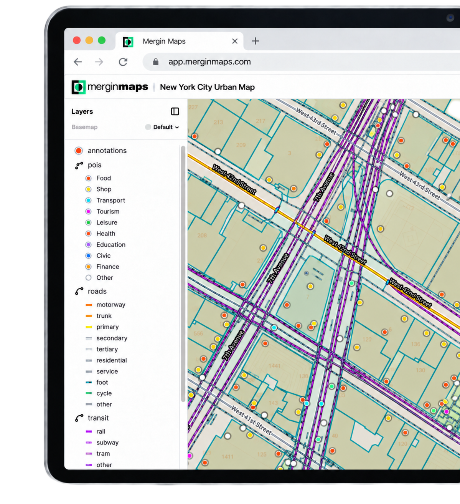

FOSS4G NA 2026 · Workshop
From QGIS to the Field and Back
Build a project, survey it together, then automate it with Claude

Vitor Vieira · Lutra Consulting
Get set up

QGIS · latest LTRAdd your email
In QGISPlugins → Manage and Install → Mergin Maps
What will we do?



Live demo
We are back
SyncHistoryWeb map+ Claude

Let’s go capture some field data
Vitor Vieira · vitor.vieira@lutraconsulting.co.uk
For FOSS4G NA attendees
1-month free trial
Scan and leave your email
Connect on LinkedIn